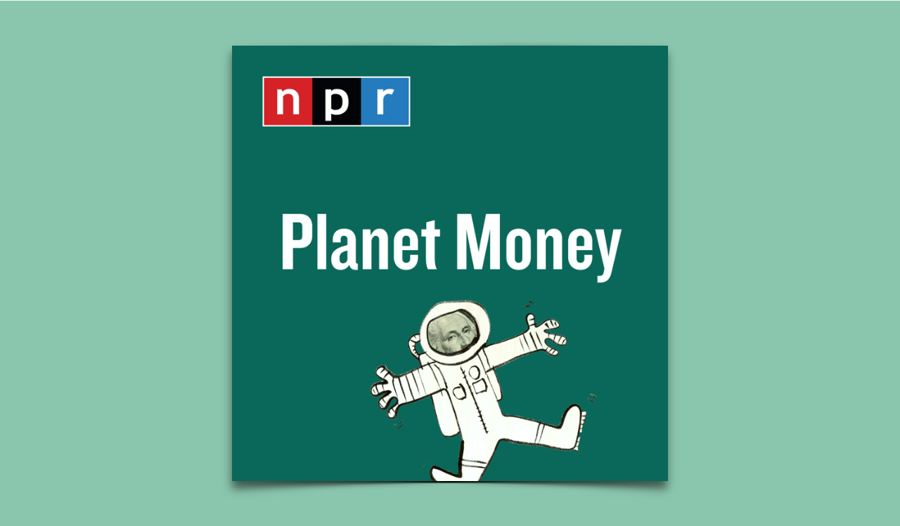
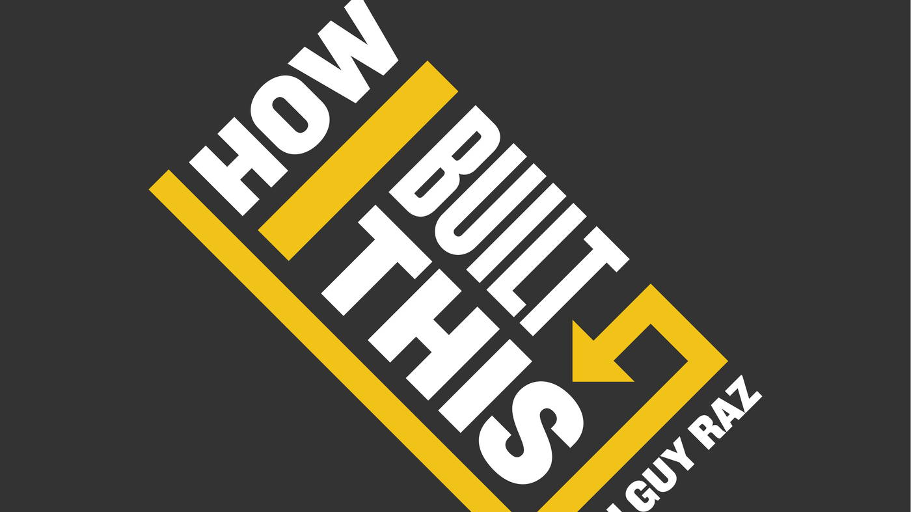
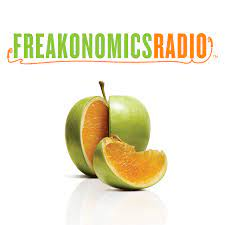
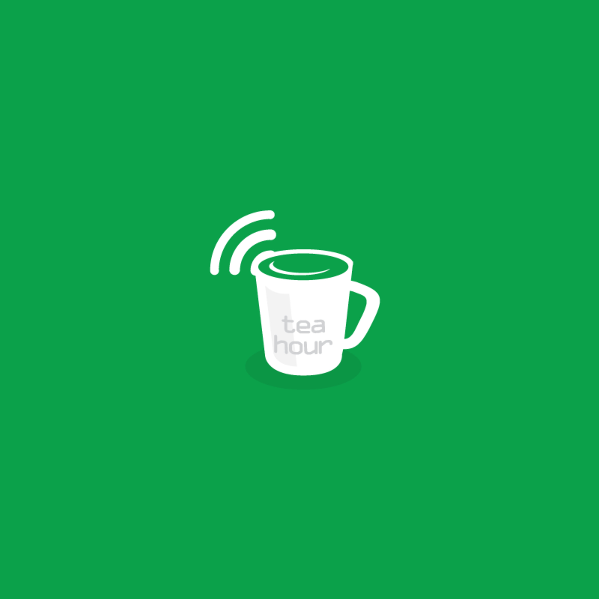
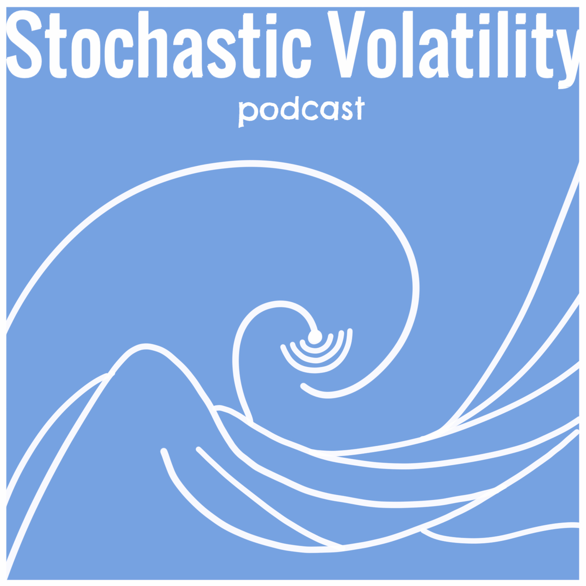
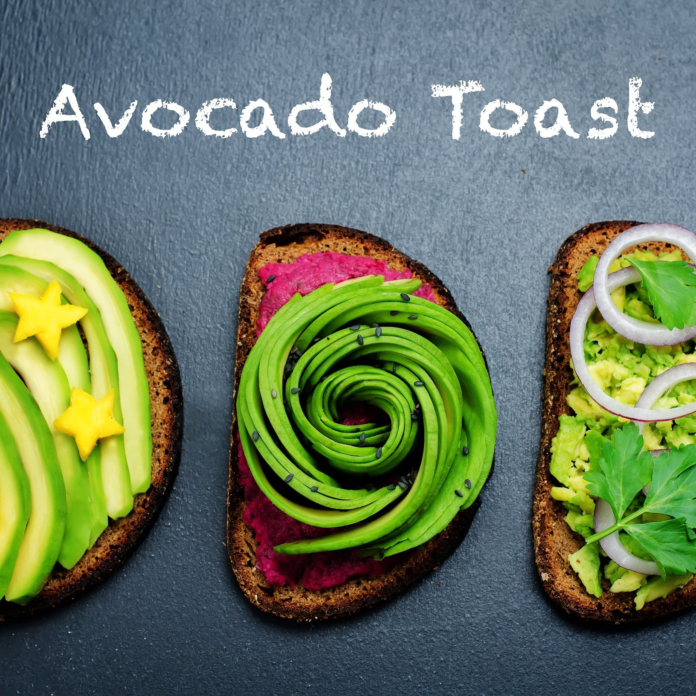
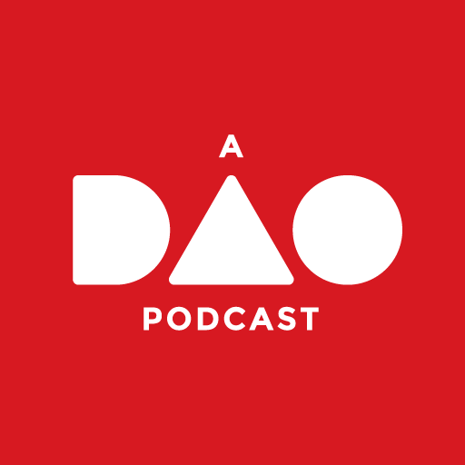

Podcast 已经愈发频繁地成为我们闲暇时获取咨询的工具，同时也在我们做很多机械事件时（做饭、开车）被用来打发时间。我本人是podcast重度用户，经常会在健身、跑步、开车途中漫无目的地听一些节目。尤其是疫情期间，它和Youtube基本就是我探索外部世界的主要媒介。
个人觉得Podcast相对于很多其它形式的媒体来讲有很多的优势。
虽然调频广播有它的实时性，但它已经逐渐成为过去式。而相比于广播的大锅饭风格，在podcast里你可以任意选择自己感兴趣的内容，而不是被动地接受所有内容。
及时性的Clubhouse非常火爆，但是除非嘉宾是你非常崇拜或者欣赏的，或者你自己就是嘉宾之一，不然你很难参与到有意义的讨论中。另外信息量也非常有限，除非嘉宾整体准备比较充分或者有很好的储备，不然聊天很容易发散，导致有效信息密度很低。当然，本来clubhouse产品本身的使用场景就是带有社交属性的，所以并不完全适合以发掘有效信息为目的的听众。
而相比于Youtube以视觉方式呈现的信息内容，podcast的使用场景更广，非常适合你在处理另一件事情时候正好想利用剩余注意力攫取一些好玩信息的情况。
Podcast 工具类
工欲善其事必先利其器。我最开始就是通过iPhone自带的Podcasts听，但是当时这个app的功能还是比较局限，在国内也受制于科学上网的问题，不是所有内容都可以下载收听。另外它仅限苹果的生态，换了平台无法兼容和同步内容。所以我后来也逐步发现了一些其它第三方的工具。
ListenNotes
这是一款专门为podcast开发的搜索引擎。创作者Wenbin Fang是在湾区工作的华人工程师，本身就是一个podcast狂热迷，据他称一天可能有六七个小时都会花在听podcast上。他最早只是为了自己兴趣业余时间做了这么一个side project，后来才逐渐发现很多人都有这样的搜索需求。现在他是辞职了全职在做这个网站，影响力也越来越大，参加了很多节目的录制讨论创业历程。
这个网站特别适用于对某一个话题的全面了解，因为你能找到聊关于一项内容的几乎所有podcasts。而在听的过程中，很多优质的节目和频道就会涌现出来，就可以点线面般逐渐延伸，发现自己真正感兴趣的节目。
ListenNotes也逐渐加入了一些社交属性，比如某人可以把自己喜欢的Podcast创建成一个playlist用于朋友间分享交流。另外它也提供专门的搜索API，方便开发者进行二次创作。
Overcast
这是一款纯第三方的的podcast app，相比于原生app，它在语速调节，音量控制上有着特别的优势，基本上各种变速都不会失真。另外它还有睡眠倒计时模式，非常适合睡前聆听，然后自动关停。
因为它是第三方的app，不会对内容上做审查或者限制。只要有RSS源，我在国内的时候基本任何节目都可以下载，更自由一些。当时我用它的时候还有一个独有的功能，就是可以离线传输到apple watch上，出去跑步不用带手机就可以听，当然现在已经有非常多的app可以做到了。
这个App的局限也同样是只适用于苹果的生态，如果希望跨平台，个人更早使用的Stitcher，或者现在的多数流媒体平台像Spotify和Amazon music都已经有了Podcast支持。
那些陪伴独处时光的Podcast们
我听Podcast的初衷就是给我局限的现实生活拓展接触面，一开始什么都想去听。但是后来发现精力毕竟是有限的，兴趣再广也很难与自己经历毫不相关的内容产生共鸣，所以最后筛选了几波之后也就仅剩下这几个节目是经常会听的。
商业财经类
Planet Money
 这是NPR比较老牌的节目，每一集控制在30分钟以内，会讲一个和钱或者商业相关的故事。它经常能从一个普通人的视角出发转而反映一个比较普遍的社会现象或者规律，很有时事性和启发性。比如最近很火的元宇宙的概念，它在7月21号的一期节目里讲了这么一个故事：委内瑞拉有一群人每天的工作就是在一个游戏Old School RuneScape里挖虚拟金币交易，这比他们在当地干其它工作的收入都要高。直到有一天委内瑞拉大停电，游戏里消失了一半的玩家，游戏里的金币数量和货品价格也开始大受影响。这时人们才意识到委内瑞拉玩家其实在操纵并影响着整个游戏的金融体系。而这个虚拟世界的体系某种程度上甚至比委内瑞拉的金融体系还要更稳定一些。
Video Gaming The System : Planet Money
有的内容也是一些平时不太细想的点，比如我们一方面说生命不能用价格衡量，一方面又必须在生命逝去的时候给予合理的价格补偿，那么这个价格是如何制定的呢？这个详细的考量过程在我上一篇文章里有阐述，欢迎移步。
由于节目的影响力比较大，它有时候也能请到一些相关领域的重量级人物来直接对话。比如2013年11月1号的一期节目就请到了当年的两位经济学诺奖得主尤金法玛尔和罗伯特席勒。
493-whats-a-bubble-nobel-edition
他们其中一位是《有效市场假说》的作者，一位则是行为金融学的奠基人，也就是分别认为市场是理性的以及市场是非理性的。当年的诺奖委员会都没能评判到底哪一个学说更能准确地描述市场，所以把奖同时颁给了两位学者。而让他们两个同时来辩论股市是否存在泡沫也变成一件非常有意思的事情。
Episode 493: What’s A Bubble? (Nobel Edition)
很多人会觉得Planet Money的内容比较浅显，不够深入，但这本来也就是他们的初衷，用最浅显的语言去解释一些经济现象。同时我也不觉得Podcast是一个深入内容最好的媒介，它更多的是一个引子，给予启发。真正地深入研究都应该是线下的活。
How I Built This with Guy Raz
 这是NPR相对比较新的一档节目，2016年才开始做，每集在一到一个半小时，每次会采访一个公司的创立者，聊聊背后的创业故事，基本涵盖了各行各业最有名的一些公司包括Instagram、Airbnb、Lyft、Patagonia、Wholefoods等等。听他们聊天经常会发现很多伟大的公司其实也都是诞生于一个非常不起眼的想法，甚至很多人都有相同的想法，但是他们牛逼的地方就是执行力都惊人，敢想敢做。而很多公司能起来也和当时的市场机遇很有关，很多机会可能错过了也很再有。
那天突然听到我司的创始人也登上了7月26日的一期episode，听他在节目聊自己的经历果然在面对底下员工时表现得很不一样，比如他讲了真正创业的初衷，以及中间过程差点被股东踢出局的过程，作为自家打工人来听也算是一种非常神奇的体验。
Freakonomics Radio
这个节目是《怪诞经济学》的作者之一 Stephen J. Dubner 创立并主持的。怪诞经济学的理念也是去探讨我们习以为常的现象，但是从经济学家的角度去思考背后的原因。比如最近的一期在讨论为什么美国作为最富有的国家之一却有那么多陷入贫困的孩子；以及最近因为疫情的关系也在讨论居家办公是否会成为常态，疫情总会过去，但是什么会被永久改变。
它比Planet Money时长更长，在某些层面也会更深入一些，但是同样也是尽量地将专业知识用白话处理，兼具趣味性和涨姿势性。
科技类
Software engineering daily
这个节目是作者Jeff Meyerson在亚马逊工作期间创立的，但是他在亚麻待了半年之后就觉得自己并不适合那里，后来出来全职做Podcast。
我特别欣赏Jeff对于每一期节目的认真准备程度，毕竟即使是程序员出身，自身的知识结构还是局限在某一个领域的。Jeff的嘉宾来自软件的各个领域，包括cloud computing, big data, blockchain, frontend, database system, security, machine learning等等，但是他每一期都能和嘉宾就某一领域展开深入的对话，问的问题也非常到点上，显然都是下足了功夫的。记得Vue的作者尤雨溪有一次在另一个节目里也称赞了Jeff很会问问题。
SED算是我听过软件领域涉猎题材最广的podcast，这其实和主持人的水平和请的嘉宾都很有关系。只有主持人表现得足够专业，嘉宾才能感觉被足够的尊重，感觉碰到的是内行人，才会愿意去讲很多细节和真实的想法。
这个节目给我另一个很大的感受是，好的表达能力真的是一个好的技术人员的优良特质。其实程序员群体的逻辑性都非常强，很多人不是不善于表达，而是没有碰到真正能聊到点的人。
同时，这也是一种局限性，就是只会聊自己技术相关的话题，稍微要做一些产品上的pitch就很难抓到点上。
这个节目的嘉宾很多都是框架或者项目的作者，按理平时都是埋头写代码、与机器打交道时间很久的人，但是他们出现在节目上也都是能非常清晰、滔滔不绝地聊技术的trade off，非常令人佩服。
这我才意识到，有些东西聊不出来都归因为表达太差，其实就是我不太懂。
Teahour
Teahour 算是我最喜欢的中文科技类的podcast，按他们的描述是“专注程序员感兴趣的话题，包括 Web 设计和开发，移动应用设计和开发，创业以及一切 Geek 的话题”。然而我不得不吐槽他们这两年的更新频率实在是太慢了，基本算是年更节目了，上一期讲用 Chromebook 做开发还是20年3月份出的。
主持的几个嘉宾都挺有趣，Terry和Daniel好像一开始是Ruby on rails的程序员出身，现在可能是忙于区块链平台的开发很少有时间做节目了。他们很早期的内容现在看就很有前瞻性，比如在2013年就已经很详细深入地聊了一期比特币相关的内容，同样也是在13年就已经讨论远程团队建设和工作的体会了。
因为他们是中文社区比较有影响力的节目，所以也能经常请到国内程序员社区比较有影响力的人来聊聊，比如请到了gitlab的核心开发者武鑫 （Gitlab终于要上市了），和《深入浅出Node.js》作者朴灵一起聊聊 Node.js，和『掘金』创始人阴明聊聊创业和技术，和 Vue.js 框架的作者聊聊前端框架开发背后的故事。
我只希望这个频道不要停掉，年更也比不更强。
以下几个也是我以前做前端开发时候经常会听，但是因为现在工作内容变化听得比较少的一些节目：
- Full Stack Radio
- Front End Happy Hour (主要是一群来着Netflix的前端开发人员聊一聊前端领域的新工具，新风格）
- JavaScript Jabber
- TechStuff
闲聊类
随机波动StochasticVolatility
 按她们的自述，这是一个由三位女性媒体人发起的一档泛文化类播客。她们是社会学与媒体人的背景，又都是女性，经常能提供一种普通人，尤其男性视角不太会去注意到的人文关怀的点，很有启发性。比如这一期聊前不久因为美国从阿富汗撤军以及911事件20周年，她们和周轶君聊世界与新闻的变迁，也同样是新闻与媒体的形式改变上聊了人与这个世界相处方式的改变，令我印象非常深刻。
牛油果烤面包
这个节目的自我介绍是 『听硅谷从业人员谈论科技趋势和其他有趣的话题』他们聊的话题很多是在美华人特别感兴趣的，比如
他们聊天的氛围也非常的轻松，内容非常有趣。
津津乐道
这个是国内几个科技行业的人主持的节目，以前比较专注国内科技领域，但是现在话题也非常的广，涉及装修、保险、育儿、买房各种领域，前段时间聊了阿里的价值观，也让人印象深刻。
关于收费内容
收费的内容在很多人眼里有原罪，感觉是很多卖课人在制造焦虑。我本身对它们并不排斥，自己在得到app和极客时间app里买了非常多的课程来听。
我是觉得只要内容是优质的，其实花点钱请牛人来介绍他们所得所学其实是一条非常省时间的途径。毕竟在现实生活里，有谁能天天接触到大牛，大牛们又有几个有时间来为你传道授惑。他们付出劳动，你付一点报酬，非常合理。
适合自己的podcast才是好的podcast
感觉我们是迎来了一个史无前例的音频内容创作时代，任何一个领域都有很多牛人愿意出来制作分享。这是一件好事，但是也无形中增加了我们的选择成本以及分散我们的注意力。
一个好的podcast一定要有一个好的主持人和愿意真诚分享的嘉宾，而关于语言节奏，叙述方式，其实每个人都有自己的喜好，一切就以适合自己为准。